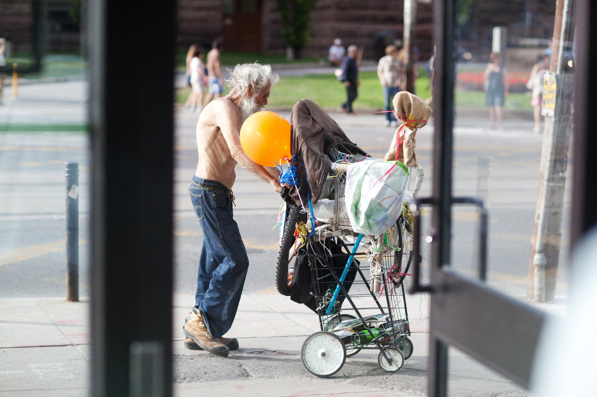
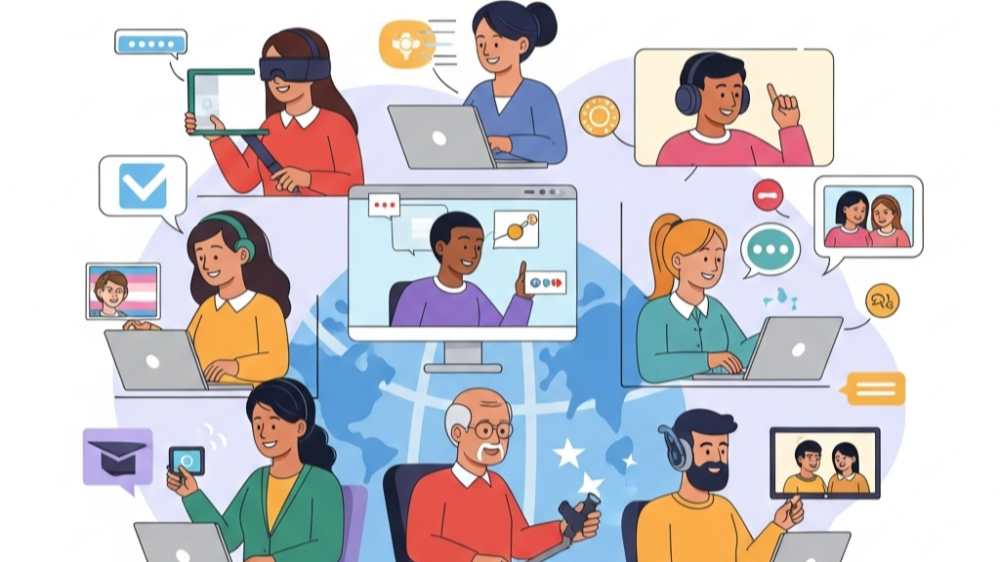

📑 On This Page:
Bridging the Digital Divide

The digital divide can be defined as the gap that separates those who have access to modern digital technologies such as the internet, computers, and smartphones from those who do not have access to them. This gap creates significant inequalities in education, healthcare, employment, and social participation.
📢 Did You Know? It is estimated that there are approximately 3 billion people in the world who do not have access to the internet.
In the modern digital world, connectivity is not a luxury; it is a necessity. Those who do not have access to connectivity face barriers to basic services and opportunities, reinforcing existing social and economic inequalities.
Impact on Education

The digital divide has resulted in an education crisis with millions of students affected globally. During the pandemic, schools were forced to close, and students without internet access at home were not able to engage in online learning and had fallen behind in their studies.
- Homework Gap: 1 in 3 students cannot complete online homework due to lack of internet access
- Digital Skills: Students without internet access are falling behind in basic digital literacy skills required for the future workforce
- Higher Education: Students without home internet are 20% less likely to pursue higher education in college or university
- Remote Learning: During the COVID-19 pandemic, over 1.3 billion children were not able to engage in remote learning
Impact on Healthcare

The digital divide has evolved to become a healthcare divide. With more and more healthcare services being offered online, those without access to the internet are being left behind in accessing basic healthcare services.
- Telehealth Access: Those without access to the internet cannot access telehealth and remote doctor visits
- Medical Information: Those without access to online information cannot manage their illnesses
- Mental Health Services: Those without access to online information cannot access mental health support
- Prescription Management: Those without access to online information cannot manage their medication
- Health Monitoring: Those without access to online information cannot manage illnesses such as diabetes and heart disease
⚠️ The Healthcare Gap: A study showed that patients without access to broadband internet were 30% more likely to delay healthcare due to lack of access to telehealth services.
Key Statistics That Matter
- Global 2.9 billion people have never used the internet (ITU, 2024)
- Rural Rural areas are 2 times more likely to have no broadband coverage
- Education Students without home internet are 20% less likely to pursue higher education
- Healthcare Patients without broadband are 30% more likely to delay medical care
- Youth Over 1.3 billion children lack internet connection at home (UNICEF)
- Telehealth 1 in 5 rural Americans cannot access telehealth services due to lack of broadband connectivity
⚠️ Who Does the Digital Divide Affect Most?
Rural Communities
Rural areas lack the infrastructure for high-speed internet connectivity. Rural residents are unable to access the benefits of the internet due to the lack of connectivity. They are also unable to access telemedicine, online education, and remote work opportunities.
Low-Income Households
For low-income households, the cost of accessing the internet is too high. They are unable to afford the cost of accessing the internet. The low-income population is also unable to access education and healthcare services due to the lack of the internet.
Elderly Populations
Elderly populations are also affected by the digital divide. They are not only lacking the knowledge of how to access the internet, but they are also in need of telehealth services.
Developing Nations
In developing countries, there are few infrastructures and data costs are also high, which makes it difficult for people to access online education and healthcare information.
💡 Solutions We Support

- Investment in Infrastructure: Expanding internet access in rural and underserved areas
- Affordable Access: Subsidized internet plans for low-income families
- Community Internet Access: Providing free internet access in libraries and community spaces
- Digital Literacy: Providing digital literacy education for all ages
- Telehealth Support: Programs to support patients in accessing telehealth services
- Device Distribution: Providing devices to students and patients in need
- Public-Private Partnerships: Working with other organizations to expand internet access
What You Can Do Today?
- Donate your used devices to schools, libraries, and healthcare facilities
- Volunteer to teach digital skills to seniors in your community
- Advocate in your community for affordable internet and telehealth access
- Support organizations working to close the digital divide in education and healthcare
- Mentor a student or help a senior access telehealth services
- Help spread the word and increase awareness about the digital divide
🌱 Together, we can build a more connected and equitable world. When everyone has access to digital opportunities for education and healthcare, we can all benefit from a healthier and more educated population.
Closing the digital divide is one important step in achieving SDG 10: Reduced Inequalities. When everyone has equal access to technology, education, and healthcare opportunities, we can build a more equitable society that does not depend on location, income levels, and background.
⬅ Back to Home Page